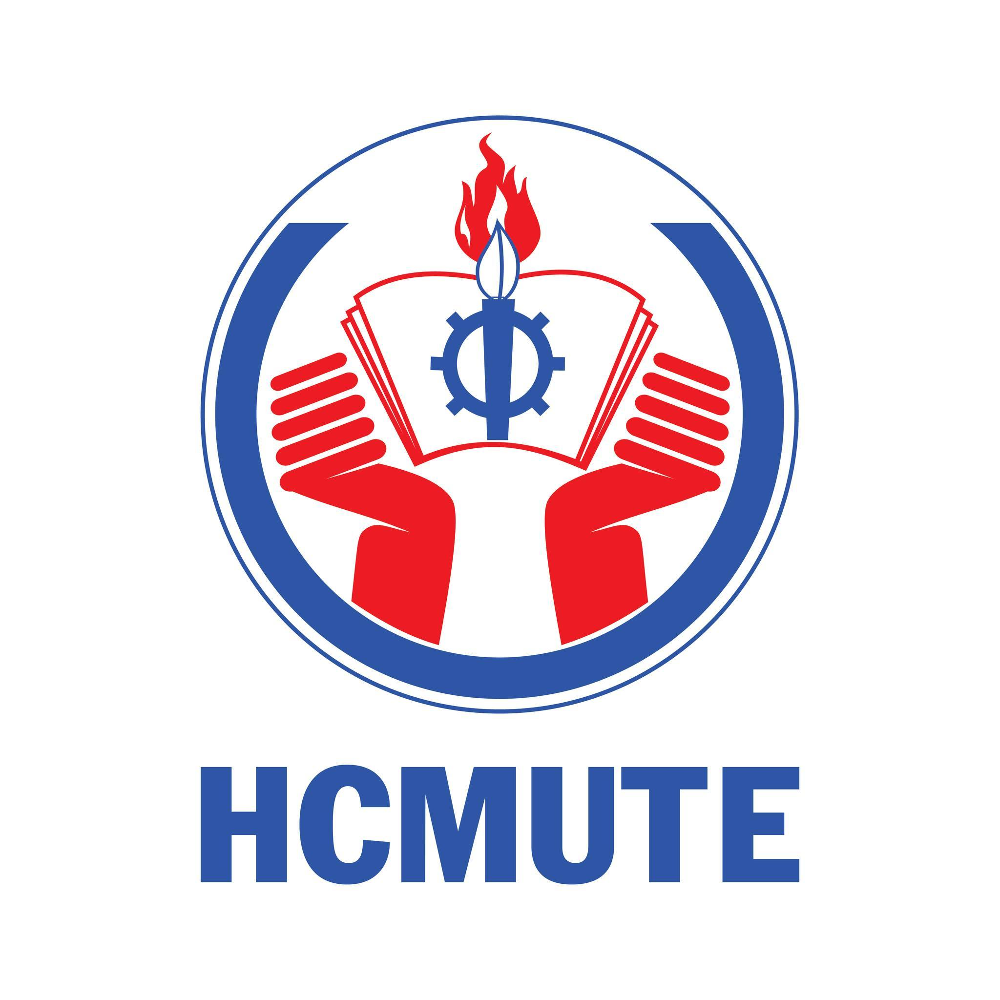

Le Quoc An
Binh Duong City - Vietnam
A current HR executive and self-learning Front-end Developer

Summary
An aspiring learner of Software and Front-end Development. With 1-year of experience in Talent Acquisition - Internal Communication - Employer Branding, I strive to blend my IT knowlegde and HR expertise and bring the optimal HRIS solutions to enterprises.
Education

HO CHI MINH CITY UNIVERSITY OF TECHNOLOGY AND EDUCATION (2018-2023)
Bachelor of Arts | Major: English Linguistics | GPA: 3.25/4.0
Work Experience
Talent Acquisition, SAKURA BEAUTY VIETNAM (MT GROUP)
July 2022 – July 2023
Talent Acquisition
- Conduct full life cycle recruitment process for sales, back-office, and marketing positions from intern to senior level
- Work with multiple recruitment channels: TopCV, CareerBuilder, Vietnamworks, Vieclam24h, Facebook, Linkedin, etc.
- Optimize talent acquisition activities & process to improve and bring the best onboarding experience for employees: pre-onboarding & onboarding process, trainings etc.
Employer Branding - LinkedIn - Facebook
- Promote workplace-related content & activities on EB channels: Linkedin, Facebook in order to showcase EVP of the company as well as to reach more potential & high-quality applicants from different backgrounds.
Internal Communication - Portfolio
- Develope & execute event plans, make reports.
- Designing graphics, email templates with Canva & Photoshop
- Activities: YEP, 20/10, Happy Hour, Mid-autumn, 1.6, Xmas, Monthly Birthday Events,…
HR Intern, COGENT INTERGRATED BUSINESS SOLUTION (REMOTE – US LOCATION)
April 2022 – July 2022
Recruitment
- Linkedin job postings and screening CVs
- Schedule and interviewing candidates for intern positions.
- Update candidate's information in company's applicant tracker system
- Follow-up on candidates after interview
- Facilitating candidate's onboarding process
Skillset
- Interview skills ⭐️⭐️⭐️☆☆
- Interpersonal Skills ⭐️⭐️⭐️⭐️☆
- Problem-solving ⭐️⭐️⭐️⭐️☆
- Google Suites & Microsoft Office ⭐️⭐️⭐️⭐️☆
- Photo & video editing skills ⭐️⭐️⭐️☆☆
Certifications
- FULL-STACK FRONT-END DEVELOPMENT - Udemy (Pursing)
- EF SET – C2 PROFICIENT (2022)
- RECRUITING FOUNDATIONS (2022)
- INTERVIEWING TECHNIQUES (2022)
- VIRTUAL RECRUITING (2022)
- BUSINESS ANALYSIS & PROCESS MANAGEMENT (2022)
Other